flags
dunno if you could tell, but, i reaaaaalllly love flags. so much so that ive dedicated an entire website to it :3
wishlist!! will cross off once collected.
- UN
- New Zealand
- Panama
- Sweden
- Serbia
- Estonia
- Brazil
- Bosnia
- Norway
- Slovakia
- Slovenia
- Albania
- Seychelles
- Palestine
- EU
- Haiti
- Peru
- Croatia
- Cyprus
- NATO
- Belarus
Australia
here are some of my flags!! (beware,, some [by some i mean alot] of them are missing photos, ill have to do them later [i will never do them later])
they are in order of when i got them (recent to oldest), however i cant remember when i got some of the older ones sorry
click for bigger image :D
all
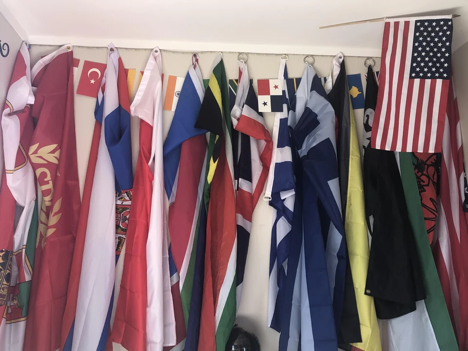
Tonga
got in the 4th week of september 2023 from my dads mum.
Australia
got between september 1st and september 30th 2023 lol. cant really remember the date. got from my dads mum after she came back from her holiday in australia.
Aserbaidschan
I also got this one on my birthday, however, from my grandmother. Its a handsown one too, which is extra cool and it on display above the small greece one in my room.
Brazil
I got this one on my birthday (31/05/31) from my parents!!
Scotland
+ lion rampant
i finally got scotland yesterday!! (writing this on the 3rd of april, 2023) my grandparents were visiting from fielding and they remembered i liked flags so they brought two for me!! Scotland, and the Royal Banner of Scotland, or the Lion Rampant.
Belarus
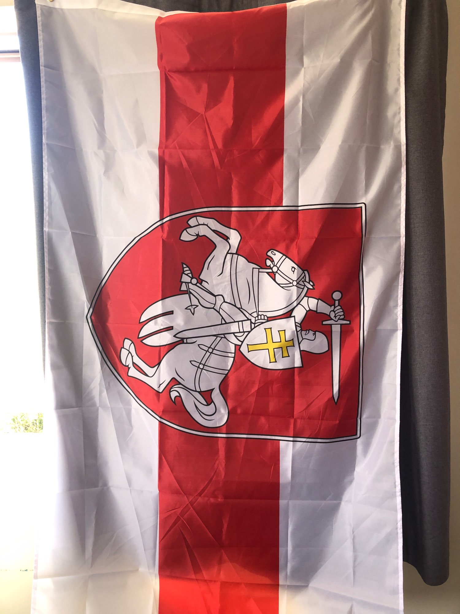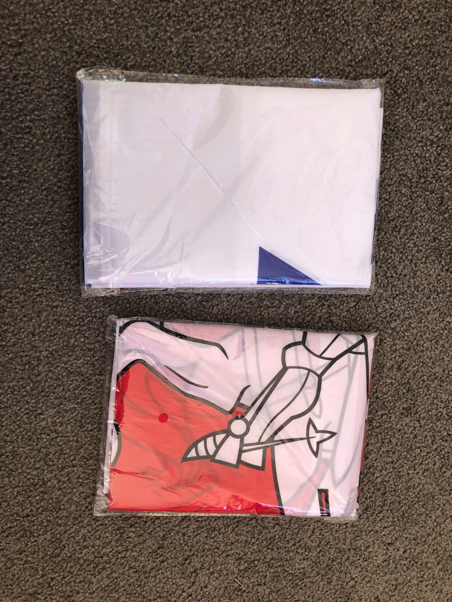
i got israel and belarus a couple of days ago (it being the 3rd of april, 2023 today.).i got them off aliexpress for less than 10 dollars.
Israel
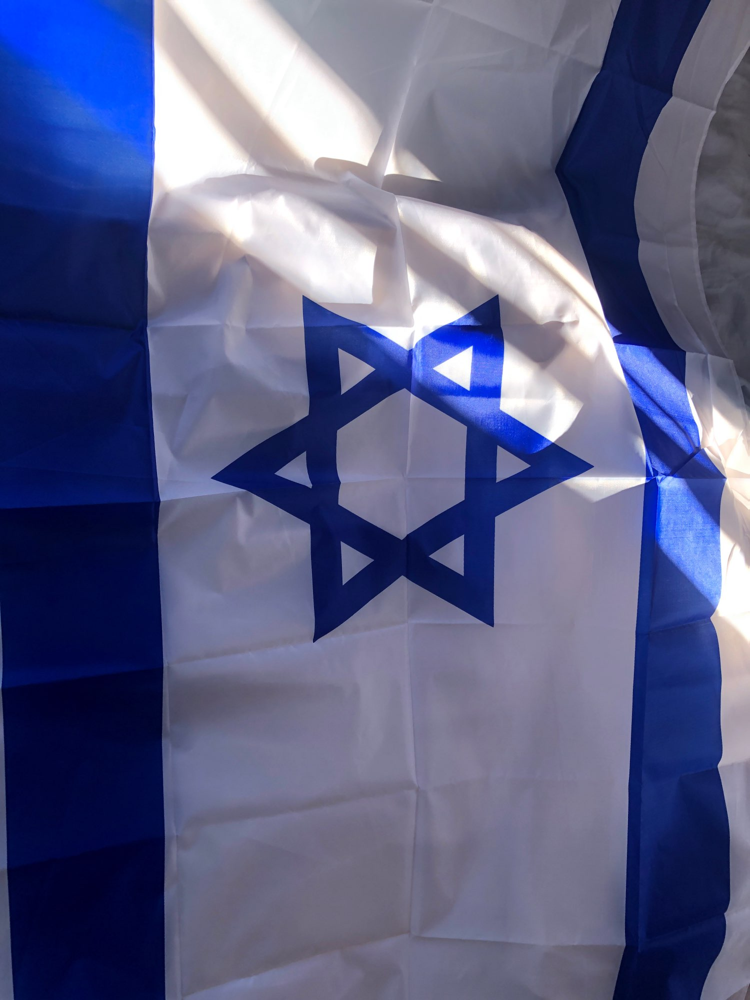
Namibia
South Africa
United Kingdom
All Blacks
one day my mum randomly came into my room and asked if i wanted an all blacks flag. this was my first ever new zealand flag, ahha, yeah, odd for a kiwi to not already have a new zealand flag.
Germany
Poland


Greece
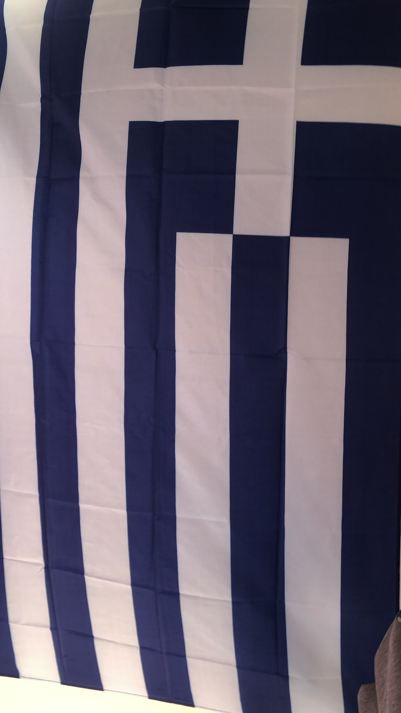
i bought this one along with greece, poland and germany. they were 10 dollars each, from another local 2 dollar shop i discovered one day on accident.
Kingdom of Serbia
none photo sorry
Serbia and Montenegro

Non Standardised SPQR Laures
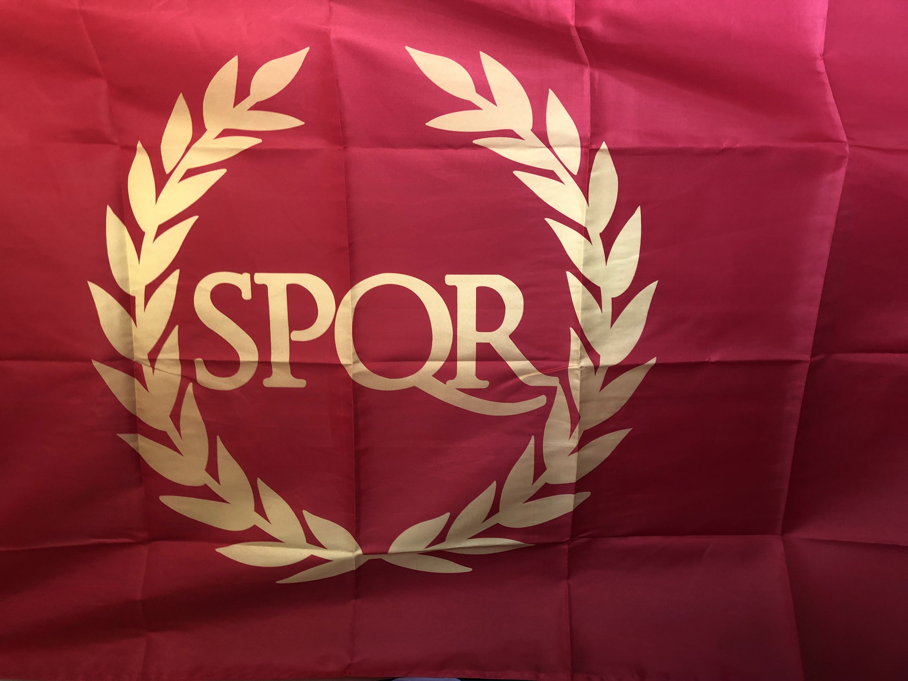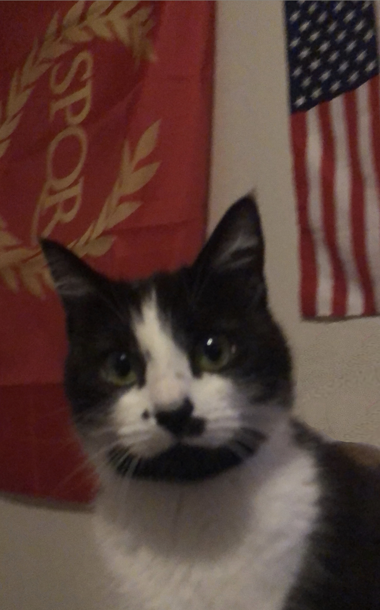
Austria Hungary
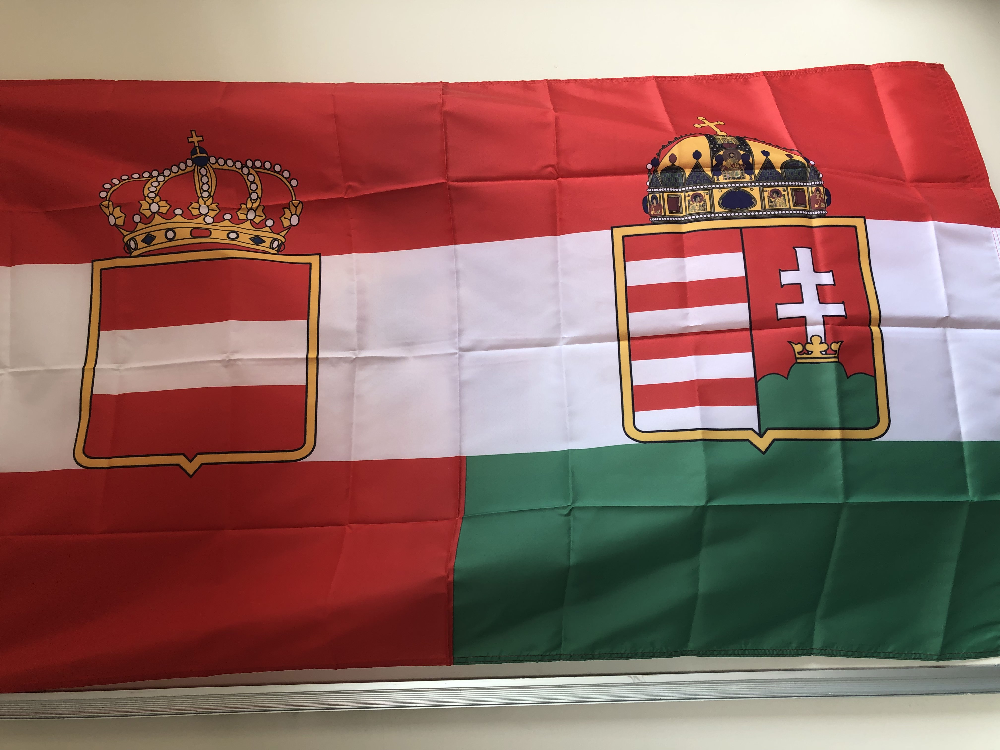
I brought this flag off of https://theflagshop.co.nz/. it is probably one of my favourites.
USA
 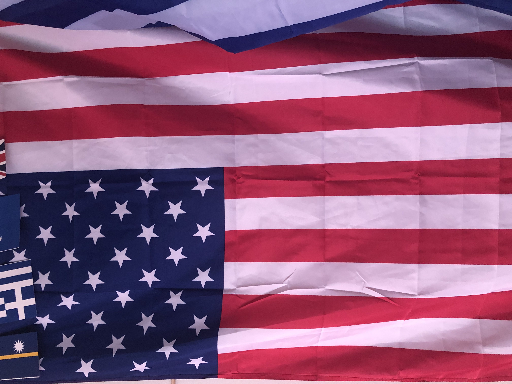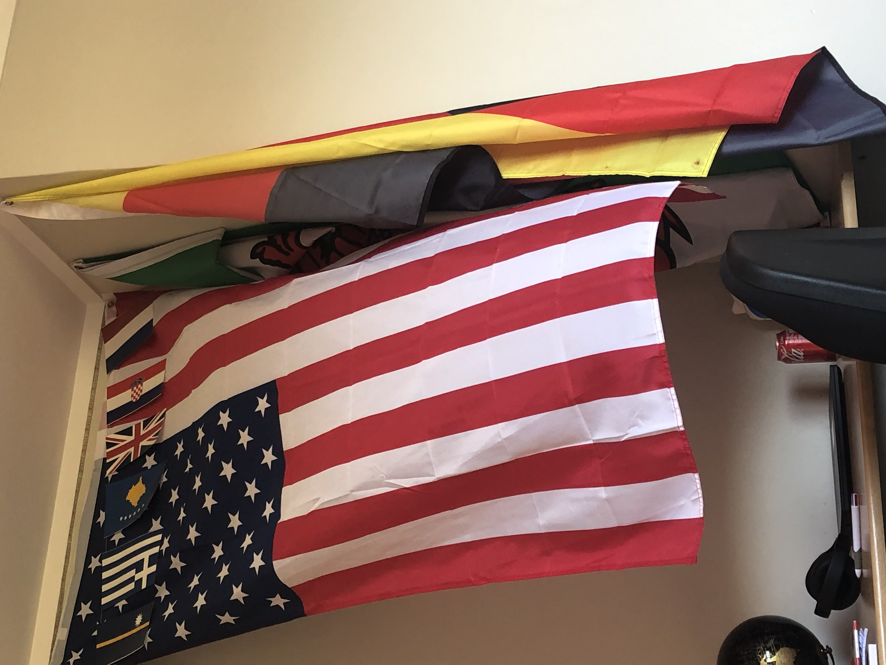
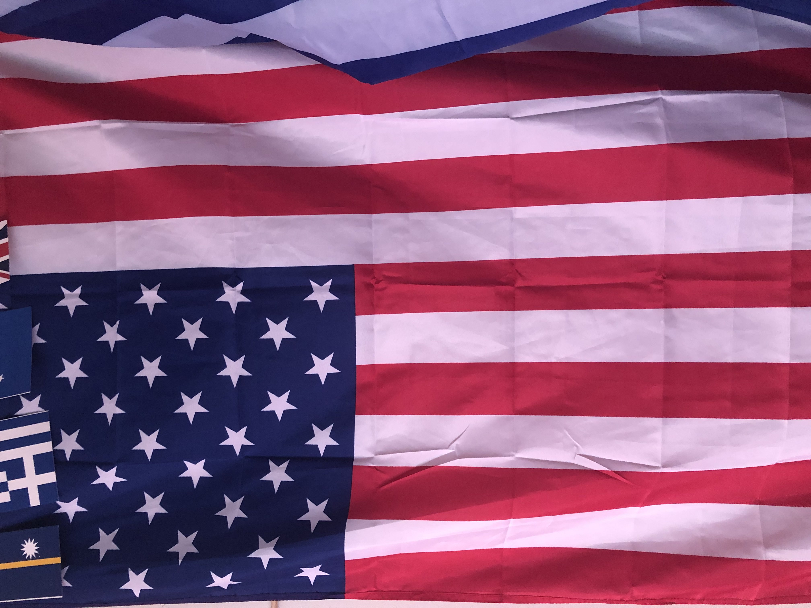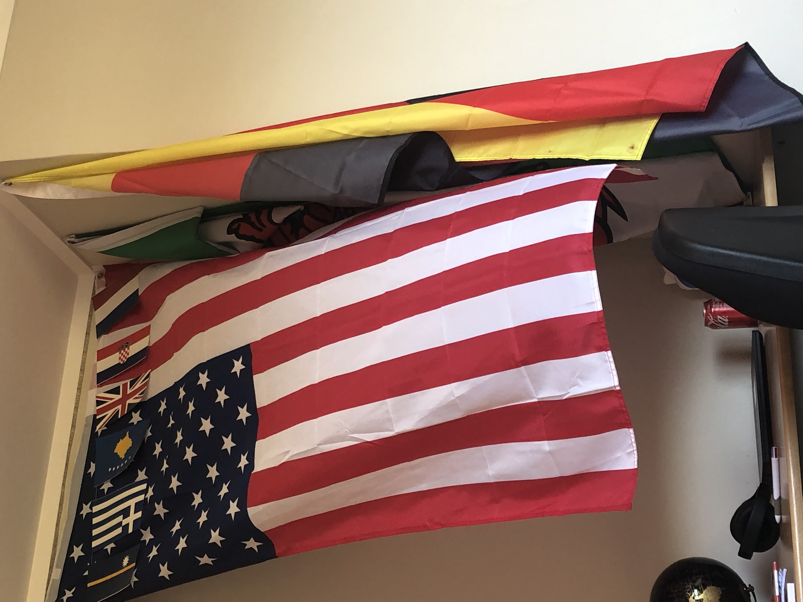
this was my second ever flag. i bought this one in town one day late 2022 probably around christmas time. i didnt even know any local shops that sold flags, and i was ecstatic to discover a 2 dollar shop that did.
Wales
this one will always have a special place in my heart. wales was the first flag i ever got, probably when i was around 5-7, from one of my grandparents who visited wales. it sat in my wardrobe, collecting dust because i had no interest in flags at the time. then, in 2021, i took it out of my closet and hung it on my wall, in an attempt to make my wall look more interesting. by that time, i had an interest in geography/history, but flags? not so much. then, in 2022 my interest in flags picked up after i memorised all the world flags for fun.